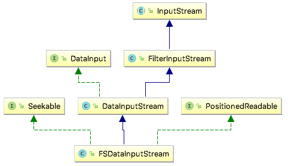
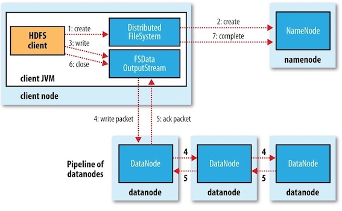

Hadoop: The Definitive Guide 3 - The Hadoop Distributed FileSystem¶
Filesystems that manage the storage across a network of machines are called distributed filesystems . Hadoop comes with a distributed filesystem called HDFS, which stands for Hadoop Distributed Filesystem .
1 The Design of HDFS¶
HDFS is a filesystem designed for storing very large files with streaming data access patterns, running on clusters of commodity hardware.
- Very large files: files that are hundreds of megabytes, gigabytes, or terabytes in size.
- Streaming data access: HDFS is built around the idea that the most efficient data processing pattern is a write-once, read-many-times pattern.
- Commodity hardware: It’s designed to run on clusters of commodity hardware.
These are areas where HDFS is not a good fit today:
- Low-latency data access
- Lots of small files
- Multiple writers, arbitrary file modifications
2 HDFS Concepts¶
Blocks¶
A disk has a block size, which is the minimum amount of data that it can read or write. Filesystems for a single disk build on this by dealing with data in blocks, which are an integral multiple of the disk block size.
HDFS, too, has the concept of a block, but it is a much larger unit — 128 MB by default (typically a few kilobytes for ordinary file system). Unlike a filesystem for a single disk, a file in HDFS that is smaller than a single block does not occupy a full block’s worth of underlying storage. (For example, a 1 MB file stored with a block size of 128 MB uses 1 MB of disk space, not 128 MB.)
Question
WHY IS A BLOCK IN HDFS SO LARGE? To minimize the cost of seeks.
Having a block abstraction for a distributed filesystem brings several benefits.
- A file can be larger than any single disk in the network.
- Making the unit of abstraction a block rather than a file simplifies the storage subsystem.
- storage management: because blocks are a fixed size, it is easy to calculate how many can be stored on a given disk.
- metadata concerns: because blocks are just chunks of data to be stored, file metadata such as permissions information does not need to be stored with the blocks.
- Blocks fit well with replication for providing fault tolerance and availability.
- To insure against corrupted blocks and disk and machine failure, each block is replicated to a small number of physically separate machines (typically three).
Namenodes and Datanodes¶
An HDFS cluster has two types of nodes: a namenode (the master) and a number of datanodes (workers).
- The namenode manages the filesystem namespace. It maintains the filesystem tree and the metadata for all the files and directories in the tree. This information is stored persistently on the local disk in the form of two files: the namespace image and the edit log.
- The namenode also knows the datanodes on which all the blocks for a given file are located;
- Datanodes are the workhorses of the filesystem. They store and retrieve blocks when they are told to (by clients or the namenode), and they report back to the namenode periodically with lists of blocks that they are storing.
If the machine running the namenode were obliterated, all the files on the filesystem would be lost since there would be no way of knowing how to reconstruct the files from the blocks on the datanodes. Possible solution:
- to back up the files that make up the persistent state of the filesystem metadata.
- to run a secondary namenode, which keeps a copy of the merged namespace image.
Block Caching¶
For frequently accessed files, the blocks may be explicitly cached in the datanode’s memory, in an off-heap block cache. Users or applications instruct the namenode which files to cache (and for how long) by adding a cache directive to a cache pool.
HDFS Federation¶
Problem: On very large clusters with many files, memory becomes the limiting factor for scaling, since namenode keeps a reference to every file and block in the filesystem in memory.
For example, a 200-node cluster with 24 TB of disk space per node, a block size of 128 MB, and a replication factor of 3 has room for about 2 million blocks (or more): 200\times 24TB⁄(128MB×3), So in this case, setting the namenode memory to 12,000 MB would be a good starting point.
Solution: HDFS federation, allows a cluster to scale by adding namenodes, each of which manages a portion of the filesystem namespace.
HDFS High Availability¶
To remedy a failed namenode, a pair of namenodes in an active-standby configuration is introduced in Hadoop 2. In the event of the failure of the active namenode, the standby takes over its duties to continue servicing client requests without a significant interruption.
3 The Command-Line Interface¶
Basic Filesystem Operations¶
Hadoop’s filesystem shell command is
Copying a file from the local filesystem to HDFS:
#The local file is copied tothe HDFS instance running on localhost. $ hadoop fs -copyFromLocal test.copy /test.copy # works as the same $ hadoop fs -copyFromLocal test.copy hdfs://localhost:9000/test2.copy
Copying the file from the HDFS to the local filesystem:
$ hadoop fs -copyToLocal /test.copy test.copy.txt
4 Hadoop Filesystems¶
Hadoop has an abstract notion of filesystems, of which HDFS is just one implementation. The Java abstract class
| Filesystem | URI scheme | Java implementation | Description |
|---|---|---|---|
| Local | file | fs.LocalFileSystem | A filesystem for a locally connected disk with client-side checksums |
| HDFS | hfs | hdfs.DistributedFileSystem | Hadoop’s distributed filesystem |
| WebHDFS | webhdfs | hdfs.web.WebHdfsFileSystem | Providing authenticated read/write access to HDFS over HTTP. |
| Secure WebHDFS | swebhdfs | hdfs.web.SWebHdfsFileSystem | The HTTPS version of WebHDFS. |
When you are processing large volumes of data you should choose a distributed filesystem that has the data locality optimization, notably HDFS.
HTTP¶
The HTTP REST API exposed by the WebHDFS protocol makes it easier for other languages to interact with HDFS. Note that the HTTP interface is slower than the native Java client, so should be avoided for very large data transfers if possible.
There are two ways of accessing HDFS over HTTP:
- Directly, where the HDFS daemons serve HTTP requests to clients;
- Via a proxy (or proxies), which accesses HDFS on the client’s behalf using the usual DistributedFileSystem API.

HDFS proxy allows for stricter firewall and bandwidth-limiting policies to be put in place. It’s common to use a proxy for transfers between Hadoop clusters located in different data centers, or when accessing a Hadoop cluster running in the cloud from an external network.
5 The Java Interface¶
Hadoop
Reading Data from a Hadoop URL¶
NOT recommended, because
Reading Data Using the FileSystem API¶
A file in a Hadoop filesystem is represented by a Hadoop hdfs://localhost/user/tom/test.copy
Since
// Returns the default filesystem public static FileSystem get(Configuration conf) throws IOException // Uses the given URI’s scheme and authority to determine the filesystem to use public static FileSystem get(URI uri, Configuration conf) throws IOException // Retrieves the filesystem as the given user public static FileSystem get(URI uri, Configuration conf, String user) throws IOException // Retrieves a local filesystem instance public static LocalFileSystem getLocal(Configuration conf) throws IOException
A etc/hadoop/core-site.xml.
With a
// Uses a default buffer size of 4 KB public FSDataInputStream open(Path f) throws IOException // Uses a buffer size of bufferSize public abstract FSDataInputStream open(Path f, int bufferSize) throws IOException
Displaying files from a Hadoop filesystem on standard output by using the FileSystem directly:
// $ hdfs://localhost:9000/test2.copy import org.apache.hadoop.conf.Configuration; import org.apache.hadoop.fs.FileSystem; import org.apache.hadoop.fs.Path; import org.apache.hadoop.io.IOUtils; import java.io.InputStream; import java.net.URI; public class FileSystemCat { public static void main(String[] args) throws Exception { String uri = args[0]; Configuration conf = new Configuration(); FileSystem fs = FileSystem.get(URI.create(uri), conf); InputStream in = null; try { in = fs.open(new Path(uri)); IOUtils.copyBytes(in, System.out, 4096, false); } finally { IOUtils.closeStream(in); } } }
FSDataInputStream¶
The

The
public interface Seekable { void seek(long pos) throws IOException; long getPos() throws IOException; }
Displaying files from a Hadoop filesystem on standard output twice, by using
// hdfs://localhost:9000/test2.copy import org.apache.hadoop.conf.Configuration; import org.apache.hadoop.fs.FSDataInputStream; import org.apache.hadoop.fs.FileSystem; import org.apache.hadoop.fs.Path; import org.apache.hadoop.io.IOUtils; import java.net.URI; public class FileSystemDoubleCat { public static void main(String[] args) throws Exception { String uri = args[0]; Configuration conf = new Configuration(); FileSystem fs = FileSystem.get(URI.create(uri), conf); FSDataInputStream in = null; try { in = fs.open(new Path(uri)); IOUtils.copyBytes(in, System.out, 4096, false); in.seek(0); // go back to the start of the file IOUtils.copyBytes(in, System.out, 4096, false); } catch (Exception ex) { ex.printStackTrace(); } finally { IOUtils.closeStream(in); } } }
Writing Data¶
The
// takes a Path object for the file to be created and returns an output stream to write to public FSDataOutputStream create(Path f) throws IOException // appends to an existing file public FSDataOutputStream append(Path f) throws IOException
Warning
The
There’s an overloaded method of
public interface Progressable {
public void progress();
}
Here, we illustrate progress by printing a period every time the
// args: /Users/larry/test.copy hdfs://localhost:9000/test4.copy import org.apache.hadoop.conf.Configuration; import org.apache.hadoop.fs.FileSystem; import org.apache.hadoop.fs.Path; import org.apache.hadoop.io.IOUtils; import org.apache.hadoop.util.Progressable; import java.io.*; import java.net.URI; // Copying a local file to a Hadoop filesystem public class FileCopyWithProgress { public static void main(String[] args) throws Exception { String localsrc = args[0]; String dstsrc = args[1]; BufferedInputStream in = new BufferedInputStream(new FileInputStream(localsrc)); Configuration conf = new Configuration(); FileSystem fs = FileSystem.get(URI.create(dstsrc), conf); try { OutputStream out = fs.create(new Path(dstsrc), new Progressable() { @Override public void progress() { System.out.println("."); } }); IOUtils.copyBytes(in, out, 4096, true); } finally { IOUtils.closeStream(in); } //end try }// end main }
FSDataOutputStream¶
The
public class FSDataOutputStream extends DataOutputStream implements Syncable { public long getPos() throws IOException { // implementation elided }// implementation elided }
However, because HDFS allows only sequential writes to an open file or appends to an already written file,
Directories¶
public boolean mkdirs(Path f) throws IOException
This method creates all of the necessary parent directories if they don’t already exist.
Querying the Filesystem¶
Deleting Data¶
Use the
public boolean delete(Path f, boolean recursive) throws IOException
If
6 Data Flow¶
Anatomy of a File Read¶
The figure below shows the main sequence of events when reading a file.

- step 1: The client opens the file it wishes to read by calling
open() on theFileSystem object, which for HDFS is an instance ofDistributedFileSystem . - step 2:
DistributedFileSystem calls the namenode, using remote procedure calls (RPCs), to determine the locations of the first few blocks in the file. - step 3: For each block, the namenode returns the addresses of the datanodes that have a copy of that block. Furthermore, the datanodes are sorted according to their proximity to the client.
- If the client is itself a datanode, the client will read from the local datanode if that datanode hosts a copy of the block.
- The
DistributedFileSystem returns anFSDataInputStream to the client for it to read data from.FSDataInputStream in turn wraps aDFSInputStream , which manages the datanode and namenode I/O. - The client then calls
read() on the stream.
- step 4:
DFSInputStream , which has stored the datanode addresses for the first few blocks in the file, then connects to the first (closest) datanode for the first block in the file. Data is streamed from the datanode back to the client, which callsread() repeatedly on the stream. - step 5: When the end of the block is reached,
DFSInputStream will close the connection to the datanode, then find the best datanode for the next block. - step 6: This happens transparently to the client, which from its point of view is just reading a continuous stream.
- Blocks are read in order, with the
DFSInputStream opening new connections to datanodes as the client reads through the stream. - It will also call the namenode to retrieve the datanode locations for the next batch of blocks as needed. When the client has finished reading, it calls
close() on theFSDataInputStream .
- Blocks are read in order, with the
Anatomy of a File Write¶
The figure below illustrates the case of creating a new file, writing data to it, then closing the file.

- step 1: The client creates the file by calling
create() onDistributedFileSystem . - step 2:
DistributedFileSystem makes an RPC call to the namenode to create a new file in the filesystem’s namespace, with no blocks associated with it.- The namenode performs various checks to make sure the file doesn’t already exist and that the client has the right permissions to create the file.
- If these checks pass, the namenode makes a record of the new file; otherwise, file creation fails and the client is thrown an
IOException . - The
DistributedFileSystem returns anFSDataOutputStream for the client to start writing data to. Just as in the read case,FSDataOutputStream wraps aDFSOutputStream , which handles communication with the datanodes and namenode.
- step 3: As the client writes data, the
DFSOutputStream splits it into packets, which it writes to an internal queue called the data queue . The data queue is consumed by theDataStreamer , which is responsible for asking the namenode to allocate new blocks by picking a list of suitable datanodes to store the replicas. - step 4: The list of datanodes forms a pipeline, and here we’ll assume the replication level is three, so there are three nodes in the pipeline. The
DataStreamer streams the packets to the first datanode in the pipeline, which stores each packet and forwards it to the second datanode in the pipeline. Similarly, the second datanode stores the packet and forwards it to the third (and last) datanode in the pipeline . - step 5: The
DFSOutputStream also maintains an internal queue of packets that are waiting to be acknowledged by datanodes, called the ack queue. A packet is removed from the ack queue only when it has been acknowledged by all the datanodes in the pipeline. - step 6: When the client has finished writing data, it calls
close() on the stream. This action flushes all the remaining packets to the datanode pipeline. - step 7: It waits for acknowledgments before contacting the namenode to signal that the file is complete.
Coherency Model¶
A coherency model for a filesystem describes the data visibility of reads and writes for a file.
- Any content written to the file is not guaranteed to be visible, even if the stream is flushed.
- Once more than a block’s worth of data has been written, the first block will be visible to new readers.
- The
FSDataOutputStream.hflush() method force all buffers to be flushed to the datanodes.- The
hflush() guarantees that the data written up to that point in the file has reached all the datanodes in the write pipeline and is visible to all new readers. - But it does not guarantee that the datanodes have written the data to disk, only that it’s in the datanodes’ memory.
- Closing a file in HDFS performs an implicit
hflush() .
- The
- The
hsync() method syncs to disk for a file descriptor.
FileOutputStream out = new FileOutputStream(localFile); out.write("content".getBytes("UTF-8")); out.flush(); // flush to operating system out.getFD().sync(); // sync to disk assertThat(localFile.length(), is(((long) "content".length())));
You should call
7 Parallel Copying with distcp¶
The program
$ hadoop distcp file1 file2